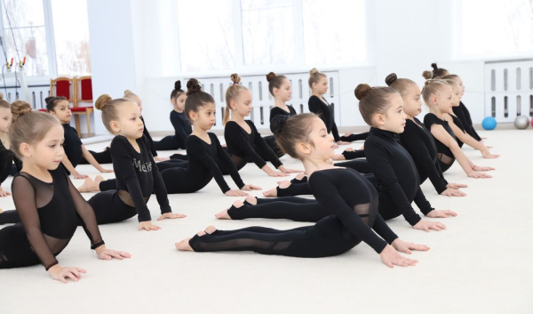

Подготовка к новому соревновательному сезону идет полным ходом
 10.06.2023После непродолжительных каникул у художественных гимнасток нашего центра возобновились тренировки, в ходе которых тренерский штаб и гимнастки ищут новые возможности совершенствования спортивного мастерства.
«Новый сезон – это всегда волнительно и очень интересно. Новые правила, требующие сложных программ и невероятного артистизма, новые купальники, новые встречи и по итогу заслуженные результаты. Я всегда болею за каждую нашу гимнастку и желаю им убедительных и ярких побед, в первую очередь над собой. В этом сезоне мы увидим много красивых выступлений наших юных гимнасток, которые уже весьма решительно выходят на взрослый, профессиональный помост», - отметила тренер по художественной гимнастике центра KOROLEVATEAM, Чемпионка России, Европы и мира по эстетической гимнастике, Айна Фаракшина.
⟵ На главную